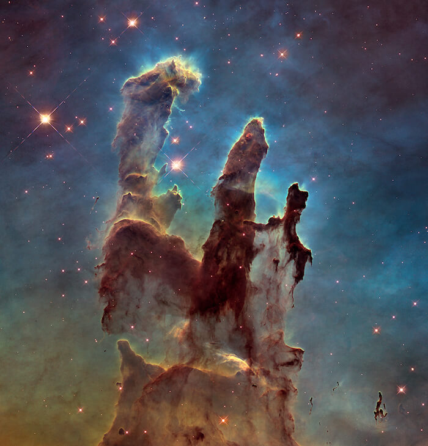
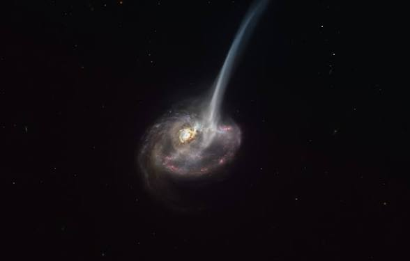

Las primeras galaxias se formaron cuando las nubes de
gas comenzaron a aglomerarse bajo la influencia de la gravedad, con
la materia oscura jugando un papel crucial. Esta materia oscura, aunque
invisible, proporcionó la gravedad adicional necesaria para que estas
nubes de gas se compactaran, dando lugar a las primeras estrellas.
Con el paso del tiempo, estas estrellas se agruparon en galaxias más
grandes y complejas. Aunque las primeras galaxias eran pequeñas y caóticas,
las colisiones y fusiones entre ellas jugaron un papel esencial en su crecimiento,
resultando en las impresionantes estructuras que observamos hoy.
Nacimiento de las nebulosas
Las nebulosas están hechas de polvo y gases—, principalmente
hidrógeno y helio. El polvo y los gases en una nebulosa están muy dispersos,
pero la gravedad puede comenzar a juntar grupos de polvo y gas. A medida que
estos grupos se hacen más y más grandes, su fuerza gravitacional se hace más
y más fuerte. Finalmente, el grupo de polvo y gas se vuelve tan grande que se
colapsa por su propia gravedad. El colapso hace que el material en el centro
de la nube se caliente, y este núcleo caliente es el comienzo de una estrella.

Muerte de las galaxias

Las galaxias comienzan a ‘morir’ cuando dejan de formar estrellas,
pero hasta ahora no se había observado claramente cómo comienza este proceso en
galaxias distantes.
Muerte de las nebulosas
Cuando la estrella moribunda en el centro de la Nebulosa de
la Hélice agotó su combustible, expulsó sus capas exteriores en forma de viento
gaseoso y se transformó en una enana blanca. A medida que las brillantes capas
de gas se expanden durante 10 000 años, finalmente se adelgazan y se integran
al medio interestelar. Las nebulosas planetarias ofrecen una instantánea de una
fase de transición en la vida y la muerte de una estrella.